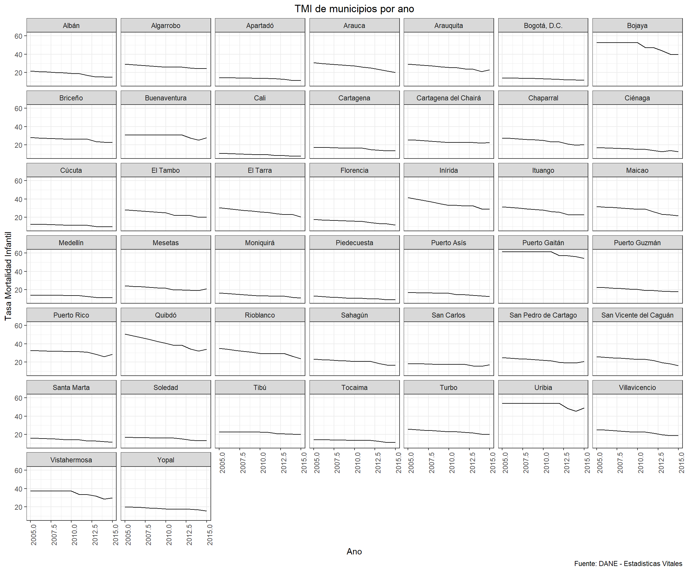
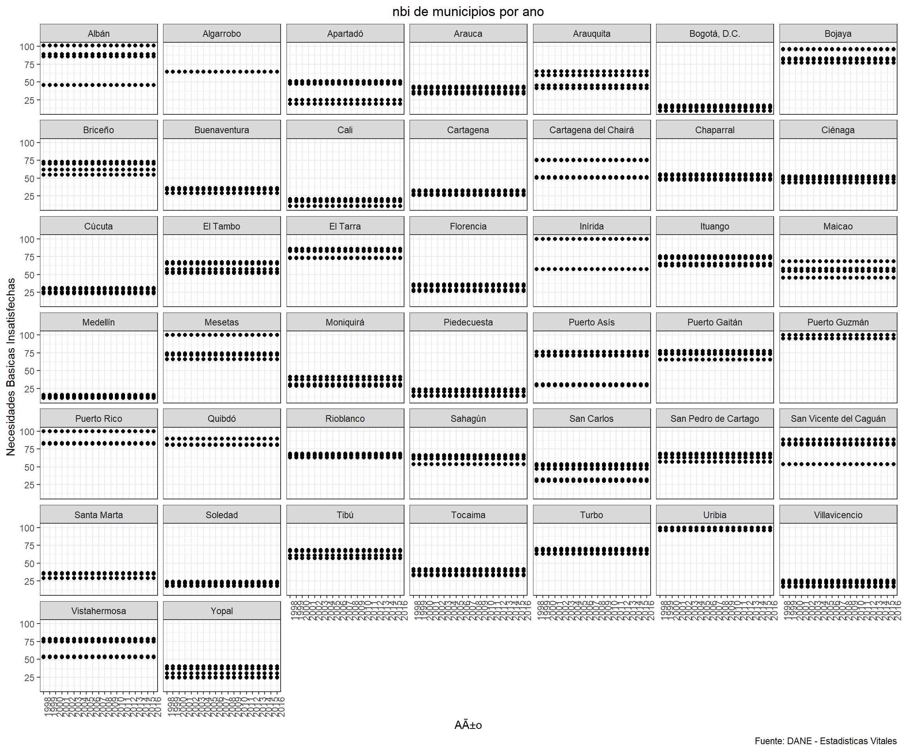
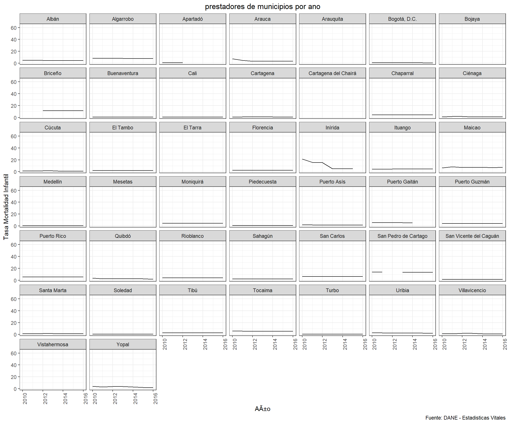
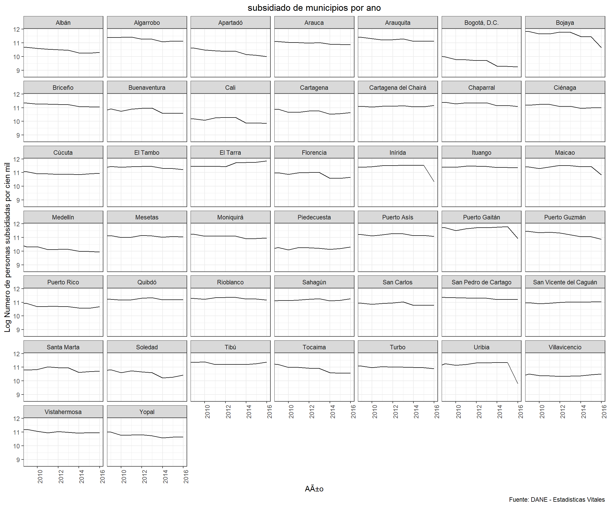
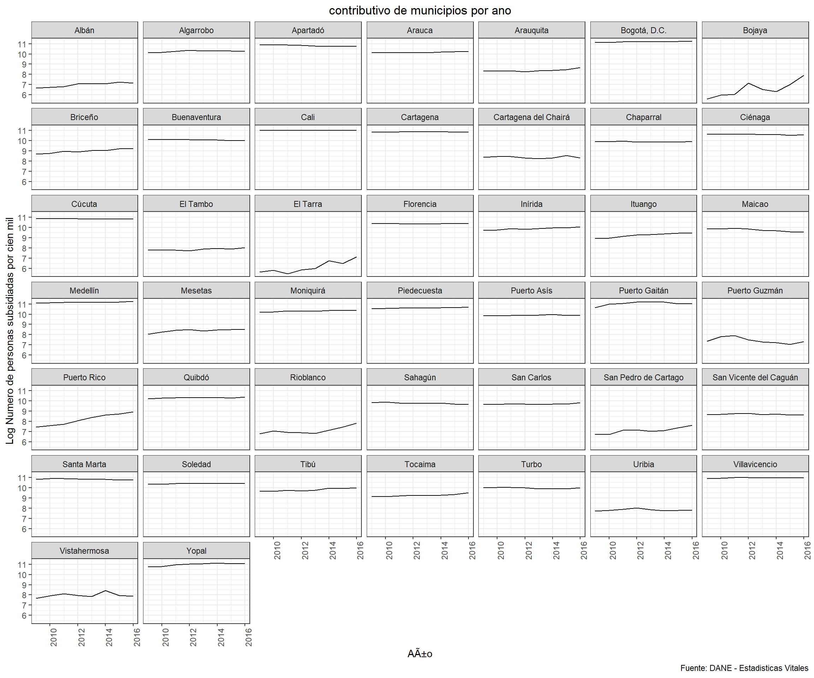

Con este codigo se importan todas las bases de datos y todos los paquetes necesarios.
#ANTES DE CORRER, ¡CORRER LA PESTANA "CODIGO PARA ARRANCAR TODO"!
load("C:/Users/felig/Dropbox/Proyecto Juan Camilo/MergeBases_Environment.RData")
#Cargar paquetes
library(readstata13)
library(tidyr)
library(dplyr)
library(data.table)
library(readxl)
library(doBy)
library(vtable)
library(plyr)
library(gridExtra)
library(grid)
library(purrr)
library(psych)
library(ggplot2)
library(psych)
library(Hmisc)
library(matrixStats)
library(ggpubr)
library(vtable)
library(ggthemes)Esta seccion esta dividiad por variables. Dentro de cada variable hay dos secciones. En la primer se observa un grafico que muestra las tendencias de la variable para los 44 municipios del ACDI-VOCA. *** La segunda seccion tiene los descriptivos de esas variables. Para mas informacion, acercarse a la descripcion de esa seccion.
En este codigo se crea el grafico que muestra las tendencias en funcion del tiempo para todos los departamentos del cuestionario ACDI-VOCA.
cede_salud_44 %>%
ggplot(aes(x = ano, y = TMI)) +
geom_line() +
facet_wrap(~municipio) +
theme_bw()+
labs(y='Tasa Mortalidad Infantil', title='TMI de municipios por ano', x= 'Ano', caption="Fuente: DANE - Estadisticas Vitales") +
theme(plot.title = element_text(hjust = 0.5), axis.text.x = element_text(angle=90))+
coord_cartesian(xlim = c(2005:2015),
ylim=c(cede_salud_44$TMI[which.min(cede_salud_44$TMI)],
cede_salud_44$TMI[which.max(cede_salud_44$TMI)]))
En esta seccion se generan los descriptivos agregados de la variable.
Aqui se genera el collapse por anos para cada municipio. Es decir, aqui se encuentran los descriptivos de la variable para cada municipio, en donde se hizo un collapse por anos.
El nombre de la variable agregada es : descrip_
descrip_TMI <- summaryBy(TMI ~ municipio, cede_salud_44, FUN=c(sum,mean,sd), na.rm=T ) #Codigo para hacer descriptivos de los homicidios (collapse por anos)
print(descrip_TMI)## municipio TMI.sum TMI.mean TMI.sd
## 1 Albán 5068.996 18.432714 2.4424713
## 2 Algarrobo 7290.719 26.511704 1.5793595
## 3 Apartadó 3678.568 13.376610 1.1463498
## 4 Arauca 7255.538 26.383773 3.3272112
## 5 Arauquita 7048.405 25.630562 2.3785369
## 6 Bogotá, D.C. 3607.565 13.118418 0.8506194
## 7 Bojaya 13335.136 48.491404 4.9864437
## 8 Briceño 7109.820 25.853889 1.7882519
## 9 Buenaventura 8157.367 29.663154 1.7914457
## 10 Cali 2573.445 9.357983 1.1083553
## 11 Cartagena 4349.467 15.816245 1.4436693
## 12 Cartagena del Chairá 6475.036 23.545587 1.1090631
## 13 Chaparral 6641.544 24.151068 2.6623346
## 14 Ciénaga 4150.912 15.094226 1.5591415
## 15 Cúcuta 3091.144 11.240525 1.0391511
## 16 El Tambo 6654.798 24.199267 2.8173045
## 17 El Tarra 7120.188 25.891593 2.9150783
## 18 Florencia 4186.684 15.224304 1.9075572
## 19 Inírida 9501.409 34.550579 3.9282531
## 20 Ituango 7455.107 27.109480 3.1644628
## 21 Maicao 7636.245 27.768164 3.4470786
## 22 Medellín 3583.332 13.030297 1.0800461
## 23 Mesetas 5919.369 21.524978 1.7910271
## 24 Moniquirá 3787.810 13.773855 1.6529129
## 25 Piedecuesta 2987.839 10.864870 1.2586155
## 26 Puerto Asís 4206.827 15.297551 1.5008991
## 27 Puerto Gaitán 16361.117 59.494969 2.5762718
## 28 Puerto Guzmán 5546.210 20.168036 1.6518563
## 29 Puerto Rico 8426.813 30.642957 2.0427149
## 30 Quibdó 11281.398 41.023266 5.9668492
## 31 Rioblanco 8278.436 30.103405 3.1561157
## 32 Sahagún 5623.991 20.450877 2.1834292
## 33 San Carlos 4758.368 17.303155 0.9357805
## 34 San Pedro de Cartago 6019.765 21.890054 2.0271529
## 35 San Vicente del Caguán 6126.169 22.276977 2.9643503
## 36 Santa Marta 3871.506 14.078203 1.4219012
## 37 Soledad 4263.088 15.502137 1.2953000
## 38 Tibú 6023.160 21.902400 1.0718124
## 39 Tocaima 3684.060 13.396581 1.0453858
## 40 Turbo 6348.390 23.085055 1.8261099
## 41 Uribia 14329.240 52.106326 2.9037217
## 42 Villavicencio 6120.222 22.255352 2.2515408
## 43 Vistahermosa 9503.860 34.559490 3.1500174
## 44 Yopal 4954.386 18.015950 1.3395631A continuacion se generan las variables necesarias para hacer el \(\Delta\). Para obtener el \(\Delta\) se hace la diferencia de la variable entre los primeros 5 anos y los ultimos 5 anos de los datos disponibles. Por ejemplo, si la variable de interes se recolecto entre 1997 y 2016, el \(\Delta\) sera la reste entre el collapase de los anos 1997 a 2001 y el collapse de los anos 2012 a 2016. El nombre de la varible \(\Delta\) es: diff_
descrip_TMI_5antes <- cede_salud_44 %>%
filter(ano<"2005-04-27") #Codigo para seleccionar solamente las variables que sean menores al ano 2008
descrip_TMI_5antes <- summaryBy(TMI ~ municipio, descrip_TMI_5antes, FUN=c(sum,mean,sd), na.rm=T ) #Descriptivos de esos anos.
descrip_TMI_5despues <- cede_salud_44 %>%
filter(ano>"2010-04-27") #Codigo para seleccionar solamente las variables que sean mayores al ano 2008.
descrip_TMI_5despues <- summaryBy(TMI ~ municipio, descrip_TMI_5despues, FUN=c(sum,mean,sd), na.rm=T ) #Descriptivos de esos anos. Codigo para calcular el \(\Delta\)
diff_TMI_mean <- descrip_TMI_5antes$TMI.mean -descrip_TMI_5despues$TMI.mean
diff_TMI_sd <- descrip_TMI_5antes$TMI.sd -descrip_TMI_5despues$TMI.sd #Sacar diferencias entre esos estadisticos. Un valor negativo es que hay mas ataques en los ultimos 5 anos.
print(diff_TMI_mean)## [1] 5.506029 4.138251 2.139458 7.471699 5.808763 1.979480 8.906911
## [8] 3.755444 2.259060 2.748438 2.928260 3.067709 6.161650 3.596703
## [15] 2.340846 6.813612 7.170496 4.206532 10.330727 7.437144 7.168039
## [22] 1.945346 4.529048 4.285520 3.341285 3.247388 4.081067 4.246321
## [29] 3.583494 15.352814 7.552509 4.714071 1.867059 4.981882 6.136651
## [36] 3.311954 2.559299 1.820721 1.925523 4.382879 3.748083 5.140226
## [43] 5.743123 3.326911En este codigo se crea el grafico que muestra las tendencias en funcion del tiempo para todos los departamentos del cuestionario ACDI-VOCA.
Cuidado el grafico es enganoso, analizar con cautela
#GRAFICO ENGANOSO NO PONER CUIDADO
#Arreglamos la variable ano porque solo hay 4 anos en los que el indice esta reportado
cede_salud_44$ano_nbi <- cede_salud_44$ano
cede_salud_44$ano_nbi <- ordered(cede_salud_44$ano_nbi, levels=c(1993,1995,2000,2005))
cede_salud_44 %>%
ggplot(aes(x = as.factor(ano), y = nbi)) +
geom_point() +
scale_color_manual(values = palette) +
facet_wrap(~municipio) +
theme_bw()+
labs(y='Necesidades Basicas Insatisfechas', title='nbi de municipios por ano', x= 'Año', caption="Fuente: DANE - Estadisticas Vitales") +
theme(plot.title = element_text(hjust = 0.5), axis.text.x = element_text(angle=90))+
coord_cartesian(ylim=c(cede_salud_44$nbi[which.min(cede_salud_44$nbi)],
cede_salud_44$nbi[which.max(cede_salud_44$nbi)]))
En esta seccion se generan los descriptivos agregados de la variable.
Aqui se genera el collapse por anos para cada municipio. Es decir, aqui se encuentran los descriptivos de la variable para cada municipio, en donde se hizo un collapse por anos.
El nombre de la variable agregada es : descrip_
descrip_nbi <- summaryBy(nbi ~ municipio, cede_salud_44, FUN=c(sum,mean,sd), na.rm=T ) #Codigo para hacer descriptivos de los homicidios (collapse por anos)
print(descrip_nbi)## municipio nbi.sum nbi.mean nbi.sd
## 1 Albán 6966.022 73.32654 23.386393546
## 2 Algarrobo 2456.607 64.64754 0.002493508
## 3 Apartadó 3669.348 38.62472 13.854142251
## 4 Arauca 3571.769 37.59757 4.020686343
## 5 Arauquita 4800.508 50.53167 9.832716518
## 6 Bogotá, D.C. 1245.336 13.10880 3.414495611
## 7 Bojaya 8234.125 86.67500 7.891594074
## 8 Briceño 5995.522 63.11076 7.601163561
## 9 Buenaventura 3234.334 34.04562 2.638919957
## 10 Cali 1511.086 15.90617 4.157784096
## 11 Cartagena 2727.745 28.71311 2.904417066
## 12 Cartagena del Chairá 6261.285 65.90826 12.141276825
## 13 Chaparral 4821.767 50.75544 3.396420522
## 14 Ciénaga 4565.644 48.05941 3.767588028
## 15 Cúcuta 2509.271 26.41337 3.146514711
## 16 El Tambo 5615.965 59.11542 6.173984412
## 17 El Tarra 7603.188 80.03355 5.902813083
## 18 Florencia 2887.404 30.39372 3.892266297
## 19 Inírida 7882.636 82.97511 20.961832498
## 20 Ituango 6666.914 70.17804 5.344943637
## 21 Maicao 5595.822 58.90339 8.765906119
## 22 Medellín 1267.824 13.34552 1.706235533
## 23 Mesetas 7840.665 82.53332 14.610049246
## 24 Moniquirá 3216.483 33.85771 4.845589635
## 25 Piedecuesta 1666.877 17.54608 3.831298964
## 26 Puerto Asís 5316.311 55.96117 21.349162474
## 27 Puerto Gaitán 6766.659 71.22799 4.895536189
## 28 Puerto Guzmán 9408.864 99.04067 1.928837078
## 29 Puerto Rico 8525.784 89.74509 8.421015212
## 30 Quibdó 8021.207 84.43376 4.152464194
## 31 Rioblanco 6278.789 66.09252 1.848046708
## 32 Sahagún 5699.718 59.99703 5.352998897
## 33 San Carlos 4077.577 42.92186 9.922012554
## 34 San Pedro de Cartago 5940.256 62.52902 4.823579096
## 35 San Vicente del Caguán 6850.387 72.10934 15.122958709
## 36 Santa Marta 3120.193 32.84414 3.155876323
## 37 Soledad 2093.938 22.04145 2.361005261
## 38 Tibú 5880.004 61.89478 4.949795834
## 39 Tocaima 3428.313 36.08750 3.481221846
## 40 Turbo 6379.845 67.15626 2.468672233
## 41 Uribia 9339.755 98.31321 1.854414474
## 42 Villavicencio 1991.080 20.95874 3.532051065
## 43 Vistahermosa 6413.784 67.51352 11.612101957
## 44 Yopal 2978.526 31.35291 6.404686791A continuacion se generan las variables necesarias para hacer el \(\Delta\). Para obtener el \(\Delta\) se hace la diferencia de la variable entre los primeros 5 anos y los ultimos 5 anos de los datos disponibles. Por ejemplo, si la variable de interes se recolecto entre 1997 y 2016, el \(\Delta\) sera la reste entre el collapase de los anos 1997 a 2001 y el collapse de los anos 2012 a 2016. El nombre de la varible \(\Delta\) es: diff_
descrip_nbi_5antes <- cede_salud_44 %>%
filter(ano<"2001-04-27") #Codigo para seleccionar solamente las variables que sean menores al ano 2008
descrip_nbi_5antes <- summaryBy(nbi ~ municipio, descrip_nbi_5antes, FUN=c(sum,mean,sd), na.rm=T ) #Descriptivos de esos anos.
descrip_nbi_5despues <- cede_salud_44 %>%
filter(ano>"2011-04-27") #Codigo para seleccionar solamente las variables que sean mayores al ano 2008.
descrip_nbi_5despues <- summaryBy(nbi ~ municipio, descrip_nbi_5despues, FUN=c(sum,mean,sd), na.rm=T ) #Descriptivos de esos anos. Codigo para calcular el \(\Delta\)
diff_nbi_mean <- descrip_nbi_5antes$nbi.mean -descrip_nbi_5despues$nbi.mean
#OBSERVE QUE DIO VALORES DE 0 PORQUE NO HAY DIFERENCIA PORQUE SOLO HAY 4 ANOS DE DATOS. OJO SOLO UTILIZAR VALORES EN BRUTO.
diff_nbi_sd <- descrip_nbi_5antes$nbi.sd -descrip_nbi_5despues$nbi.sd #Sacar diferencias entre esos estadisticos. Un valor negativo es que hay mas ataques en los ultimos 5 anos.
print(diff_nbi_mean)## [1] 0 0 0 0 0 0 0 0 0 0 0 0 0 0 0 0 0 0 0 0 0 0 0 0 0 0 0 0 0 0 0 0 0 0 0
## [36] 0 0 0 0 0 0 0 0 0print(diff_nbi_sd)## [1] 1.246344e-01 3.679011e-05 7.383362e-02 2.142766e-02 5.240202e-02
## [6] 1.819705e-02 4.205709e-02 4.050929e-02 1.406374e-02 2.215830e-02
## [11] 1.547866e-02 6.470515e-02 1.810072e-02 2.007881e-02 1.676889e-02
## [16] 3.290334e-02 3.145818e-02 2.074326e-02 1.117130e-01 2.848509e-02
## [21] 4.671661e-02 9.093132e-03 7.786211e-02 2.582386e-02 2.041835e-02
## [26] 1.137772e-01 2.609004e-02 1.027945e-02 4.487857e-02 2.212995e-02
## [31] 9.848894e-03 2.852802e-02 5.287791e-02 2.570656e-02 8.059559e-02
## [36] 1.681878e-02 1.258263e-02 2.637921e-02 1.855266e-02 1.315643e-02
## [41] 9.882830e-03 1.882355e-02 6.188499e-02 3.413284e-02Esta variable es el numero de prestadoras de servicio de salud publica. ***
Observe que, para ciertas variables, se debe calcular un indice que normalice las poblaciones de cada municipio. Esta variable tiene esa transformacion. Esta variable se transforma para que quede medida por cien mil habitantes. Asi, la transformacion que se le hace a estas variables es:
\(T = \frac{N_{t}}{P_{t}} \times 100 000\)
En donde: \(T=\) La tasa por 100 mil habitantes \(N_{t}=\) Numero total de la variable de interes \(P_{t}=\) Poblacion total en el periodo \(t\)
Por lo tanto, generamos el siguiente codigo para poder crear esta variable. El nombre de esas variables es **_cienmil**
#Loop para saber poder saber qué observaciones concuerdan tanto en el año del censo como en el año del conflicto. Esto es necesario para generar el Ãndice porque debe haber concordancia en el año de ambas bases.
a <- c()
cede_salud_44$ano_base_general <- substring(cede_salud_44$ano_base_general,1,4)
cede_salud_44$ano_base_general <- as.numeric(cede_salud_44$ano_base_general)
for(i in 1:nrow(cede_salud_44)){
if(cede_salud_44$ano[i]==cede_salud_44$ano_base_general[i]){
a <- c(a,i)
}
}
#Limpiamos base de datos para que queden solamente las observaciones que concuerden en año de conflicto y en año del censo
cede_salud_44_eq <- cede_salud_44[a,]
cede_salud_44_eq <- cede_salud_44_eq %>%
dplyr::mutate(prestadores_cienmil=(prestadores/pobl_tot)*100000)En este codigo se crea el grafico que muestra las tendencias en funcion del tiempo para todos los departamentos del cuestionario ACDI-VOCA.
cede_salud_44_eq %>%
ggplot(aes(x = ano, y = prestadores_cienmil)) +
geom_line() +
scale_color_manual(values = palette) +
facet_wrap(~municipio) +
theme_bw()+
labs(y='Tasa Mortalidad Infantil', title='prestadores de municipios por ano', x= 'Año', caption="Fuente: DANE - Estadisticas Vitales") +
theme(plot.title = element_text(hjust = 0.5), axis.text.x = element_text(angle=90))+
coord_cartesian(xlim = c(2010:2016),
ylim=c(cede_salud_44$prestadores[which.min(cede_salud_44$prestadores)],
cede_salud_44$prestadores[which.max(cede_salud_44$prestadores)]))
En esta seccion se generan los descriptivos agregados de la variable.
Aqui se genera el collapse por anos para cada municipio. Es decir, aqui se encuentran los descriptivos de la variable para cada municipio, en donde se hizo un collapse por anos.
El nombre de la variable agregada es : descrip_
descrip_prestadores_cienmil <- summaryBy(prestadores_cienmil ~ municipio, cede_salud_44_eq, FUN=c(sum,mean,sd), na.rm=T ) #Codigo para hacer descriptivos de los homicidios (collapse por anos)
print(descrip_prestadores_cienmil)## municipio prestadores_cienmil.sum prestadores_cienmil.mean
## 1 Albán 32.495594 4.6422276
## 2 Algarrobo 56.449752 8.0642503
## 3 Apartadó 1.898731 0.6329103
## 4 Arauca 29.301230 4.1858900
## 5 Arauquita 0.000000 NaN
## 6 Bogotá, D.C. 5.158473 0.7369248
## 7 Bojaya 0.000000 NaN
## 8 Briceño 68.836556 11.4727593
## 9 Buenaventura 4.970445 0.7100636
## 10 Cali 4.186221 0.5980315
## 11 Cartagena 6.135986 0.8765695
## 12 Cartagena del Chairá 0.000000 NaN
## 13 Chaparral 29.733701 4.2476716
## 14 Ciénaga 8.676421 1.2394887
## 15 Cúcuta 8.813147 1.2590209
## 16 El Tambo 14.829165 2.1184522
## 17 El Tarra 0.000000 NaN
## 18 Florencia 16.850007 2.4071439
## 19 Inírida 67.701461 11.2835768
## 20 Ituango 32.194783 4.5992547
## 21 Maicao 51.570960 7.3672800
## 22 Medellín 3.597825 0.5139750
## 23 Mesetas 0.000000 NaN
## 24 Moniquirá 32.542750 4.6489643
## 25 Piedecuesta 5.589998 0.7985712
## 26 Puerto Asís 11.860031 1.6942902
## 27 Puerto Gaitán 27.465790 5.4931579
## 28 Puerto Guzmán 29.854156 4.2648795
## 29 Puerto Rico 38.029689 5.4328127
## 30 Quibdó 18.230998 2.6044284
## 31 Rioblanco 28.264524 4.0377892
## 32 Sahagún 15.657421 2.2367744
## 33 San Carlos 43.735316 6.2479023
## 34 San Pedro de Cartago 80.515384 13.4192307
## 35 San Vicente del Caguán 10.681745 1.5259636
## 36 Santa Marta 10.036101 1.4337287
## 37 Soledad 4.494448 0.6420640
## 38 Tibú 19.385464 2.7693520
## 39 Tocaima 38.546966 5.5067094
## 40 Turbo 4.638115 0.6625879
## 41 Uribia 17.322113 2.4745875
## 42 Villavicencio 9.328326 1.3326180
## 43 Vistahermosa 0.000000 NaN
## 44 Yopal 21.987844 3.1411206
## prestadores_cienmil.sd
## 1 0.13443075
## 2 0.11500323
## 3 0.01920813
## 4 1.46587888
## 5 NA
## 6 0.12069768
## 7 NA
## 8 0.02494323
## 9 0.21587967
## 10 0.04007853
## 11 0.06405099
## 12 NA
## 13 0.01030965
## 14 0.47427591
## 15 0.28804426
## 16 0.01545615
## 17 NA
## 18 0.09341981
## 19 7.07639908
## 20 0.17656055
## 21 0.60346121
## 22 0.03281428
## 23 NA
## 24 0.02532602
## 25 0.24096005
## 26 0.03395189
## 27 0.05640493
## 28 0.04786494
## 29 0.06603935
## 30 0.51020003
## 31 0.03746756
## 32 0.01248371
## 33 0.02382480
## 34 0.19749766
## 35 0.05967225
## 36 0.18544391
## 37 0.11301813
## 38 0.03218937
## 39 0.07527002
## 40 0.03764118
## 41 0.19479839
## 42 0.45546210
## 43 NA
## 44 0.79855292A continuacion se generan las variables necesarias para hacer el \(\Delta\). Para obtener el \(\Delta\) se hace la diferencia de la variable entre los primeros 5 anos y los ultimos 5 anos de los datos disponibles. Por ejemplo, si la variable de interes se recolecto entre 1997 y 2016, el \(\Delta\) sera la reste entre el collapase de los anos 1997 a 2001 y el collapse de los anos 2012 a 2016. El nombre de la varible \(\Delta\) es: diff_
descrip_prestadores_cienmil_5antes <- cede_salud_44_eq %>%
filter(ano<"2014-04-27") #Codigo para seleccionar solamente las variables que sean menores al ano 2008
descrip_prestadores_cienmil_5antes <- summaryBy(prestadores_cienmil ~ municipio, descrip_prestadores_cienmil_5antes, FUN=c(sum,mean,sd), na.rm=T ) #Descriptivos de esos anos.
descrip_prestadores_cienmil_5despues <- cede_salud_44_eq %>%
filter(ano>"2011-04-27") #Codigo para seleccionar solamente las variables que sean mayores al ano 2008.
descrip_prestadores_cienmil_5despues <- summaryBy(prestadores_cienmil ~ municipio, descrip_prestadores_cienmil_5despues, FUN=c(sum,mean,sd), na.rm=T ) #Descriptivos de esos anos. Codigo para calcular el \(\Delta\)
diff_prestadores_cienmil_mean <- descrip_prestadores_cienmil_5antes$prestadores_cienmil.mean -descrip_prestadores_cienmil_5despues$prestadores_cienmil.mean
diff_prestadores_cienmil_sd <- descrip_prestadores_cienmil_5antes$prestadores_cienmil.sd -descrip_prestadores_cienmil_5despues$prestadores_cienmil.sd #Sacar diferencias entre esos estadisticos. Un valor negativo es que hay mas ataques en los ultimos 5 anos.
print(diff_prestadores_cienmil_mean)## [1] 0.124342034 0.106454642 0.019089482 1.072695004 NaN 0.054273846
## [7] NaN -0.020261851 0.134455073 0.029831100 0.040141301 NaN
## [13] 0.009579026 0.198350325 0.179464107 0.014301868 NaN 0.086464810
## [19] 4.822491772 -0.163344393 0.016870915 -0.023271872 NaN -0.023475568
## [25] -0.101157991 0.031422455 0.035785135 0.044327261 0.061137278 0.357590537
## [31] -0.034775774 0.011541008 0.021942045 0.213365924 0.055239991 0.084207016
## [37] 0.102130228 0.029774891 0.069475986 0.034835580 0.180102287 0.090032039
## [43] NaN 0.593167011Observe que, para ciertas variables, se debe calcular un indice que normalice las poblaciones de cada municipio. Esta variable tiene esa transformacion. Esta variable se transforma para que quede medida por cien mil habitantes. Asi, la transformacion que se le hace a estas variables es:
\(T = \frac{N_{t}}{P_{t}} \times 100 000\)
En donde: \(T=\) La tasa por 100 mil habitantes \(N_{t}=\) Numero total de la variable de interes \(P_{t}=\) Poblacion total en el periodo \(t\)
Por lo tanto, generamos el siguiente codigo para poder crear esta variable. El nombre de esas variables es **_cienmil**
En algunos casos, como en este, se saca el logaritmo para bajar la magnitud de la variable pero manteniendo las variaciones.
\(T = \ln(\frac{N_{t}}{P_{t}} \times 100 000)\)
#Loop para saber poder saber qué observaciones concuerdan tanto en el año del censo como en el año del conflicto. Esto es necesario para generar el Ãndice porque debe haber concordancia en el año de ambas bases.
a <- c()
cede_salud_44$ano_base_general <- substring(cede_salud_44$ano_base_general,1,4)
cede_salud_44$ano_base_general <- as.numeric(cede_salud_44$ano_base_general)
for(i in 1:nrow(cede_salud_44)){
if(cede_salud_44$ano[i]==cede_salud_44$ano_base_general[i]){
a <- c(a,i)
}
}
#Limpiamos base de datos para que queden solamente las observaciones que concuerden en año de conflicto y en año del censo
cede_salud_44_eq <- cede_salud_44_eq %>%
dplyr::mutate(subsidiado_cienmil=log((subsidiado/pobl_tot)*100000)) #Se saca el logaritmo para reducir la magnitudEn este codigo se crea el grafico que muestra las tendencias en funcion del tiempo para todos los departamentos del cuestionario ACDI-VOCA.
cede_salud_44_eq %>%
ggplot(aes(x = ano, y = subsidiado_cienmil)) +
geom_line() +
scale_color_manual(values = palette) +
facet_wrap(~municipio) +
theme_bw()+
labs(y='Log Numero de personas subsidiadas por cien mil', title='subsidiado de municipios por ano', x= 'Año', caption="Fuente: DANE - Estadisticas Vitales") +
theme(plot.title = element_text(hjust = 0.5), axis.text.x = element_text(angle=90))+
coord_cartesian(xlim = c(2009:2016))
En esta seccion se generan los descriptivos agregados de la variable.
Aqui se genera el collapse por anos para cada municipio. Es decir, aqui se encuentran los descriptivos de la variable para cada municipio, en donde se hizo un collapse por anos.
El nombre de la variable agregada es : descrip_
descrip_subsidiado_cienmil <- summaryBy(subsidiado_cienmil ~ municipio, cede_salud_44_eq, FUN=c(sum,mean,sd), na.rm=T ) #Codigo para hacer descriptivos de los homicidios (collapse por anos)
print(descrip_subsidiado_cienmil)## municipio subsidiado_cienmil.sum subsidiado_cienmil.mean
## 1 Albán 200.5084 10.553072
## 2 Algarrobo -Inf -Inf
## 3 Apartadó 196.5672 10.345640
## 4 Arauca 204.1873 10.746702
## 5 Arauquita 209.3932 11.020695
## 6 Bogotá, D.C. 185.8261 9.780321
## 7 Bojaya 215.8594 11.361023
## 8 Briceño 211.4825 11.130658
## 9 Buenaventura 197.3476 10.386713
## 10 Cali 188.0942 9.899695
## 11 Cartagena 197.0719 10.372203
## 12 Cartagena del Chairá 206.7497 10.881562
## 13 Chaparral 205.7863 10.830857
## 14 Ciénaga 204.1358 10.743987
## 15 Cúcuta 198.8668 10.466674
## 16 El Tambo 209.4489 11.023626
## 17 El Tarra 213.7057 11.247666
## 18 Florencia 197.8902 10.415273
## 19 Inírida 213.9729 11.261732
## 20 Ituango 213.1454 11.218179
## 21 Maicao 209.5674 11.029864
## 22 Medellín 189.4394 9.970495
## 23 Mesetas 206.9774 10.893546
## 24 Moniquirá 204.4247 10.759193
## 25 Piedecuesta 188.5113 9.921647
## 26 Puerto Asís 206.7573 10.881961
## 27 Puerto Gaitán 215.0251 11.317112
## 28 Puerto Guzmán 211.1790 11.114682
## 29 Puerto Rico 203.5447 10.712882
## 30 Quibdó 206.1180 10.848317
## 31 Rioblanco 209.9848 11.051831
## 32 Sahagún 207.6237 10.927565
## 33 San Carlos 206.5752 10.872381
## 34 San Pedro de Cartago 212.4959 11.183995
## 35 San Vicente del Caguán 204.0092 10.737324
## 36 Santa Marta 197.1557 10.376615
## 37 Soledad 191.0269 10.054046
## 38 Tibú 208.9509 10.997416
## 39 Tocaima 209.9454 11.049761
## 40 Turbo 206.1762 10.851378
## 41 Uribia 205.1133 10.795438
## 42 Villavicencio 190.7554 10.039757
## 43 Vistahermosa 205.1576 10.797767
## 44 Yopal 200.9275 10.575130
## subsidiado_cienmil.sd
## 1 0.17355881
## 2 NaN
## 3 0.21870737
## 4 0.41135384
## 5 0.36805750
## 6 0.27085337
## 7 0.36911221
## 8 0.16920552
## 9 0.44498440
## 10 0.38353947
## 11 0.45745478
## 12 0.29179617
## 13 0.47435860
## 14 0.45600933
## 15 0.59436620
## 16 0.37043320
## 17 0.40742167
## 18 0.52096290
## 19 0.30463605
## 20 0.26357372
## 21 0.53086936
## 22 0.52226352
## 23 0.25777251
## 24 0.45418401
## 25 0.38077826
## 26 0.38962194
## 27 0.55378284
## 28 0.28287650
## 29 0.18427361
## 30 0.45000525
## 31 0.28171764
## 32 0.30866535
## 33 0.09918032
## 34 0.18608290
## 35 0.29882998
## 36 0.53233259
## 37 0.72503625
## 38 0.38830836
## 39 0.23664637
## 40 0.23038717
## 41 0.49723475
## 42 0.49173338
## 43 0.26602331
## 44 0.46215475A continuacion se generan las variables necesarias para hacer el \(\Delta\). Para obtener el \(\Delta\) se hace la diferencia de la variable entre los primeros 5 anos y los ultimos 5 anos de los datos disponibles. Por ejemplo, si la variable de interes se recolecto entre 1997 y 2016, el \(\Delta\) sera la reste entre el collapase de los anos 1997 a 2001 y el collapse de los anos 2012 a 2016. El nombre de la varible \(\Delta\) es: diff_
descrip_subsidiado_cienmil_5antes <- cede_salud_44_eq %>%
filter(ano<"2013-04-27") #Codigo para seleccionar solamente las variables que sean menores al ano 2008
descrip_subsidiado_cienmil_5antes <- summaryBy(subsidiado_cienmil ~ municipio, descrip_subsidiado_cienmil_5antes, FUN=c(sum,mean,sd), na.rm=T ) #Descriptivos de esos anos.
descrip_subsidiado_cienmil_5despues <- cede_salud_44_eq %>%
filter(ano>"2012-04-27") #Codigo para seleccionar solamente las variables que sean mayores al ano 2008.
descrip_subsidiado_cienmil_5despues <- summaryBy(subsidiado_cienmil ~ municipio, descrip_subsidiado_cienmil_5despues, FUN=c(sum,mean,sd), na.rm=T ) #Descriptivos de esos anos. Codigo para calcular el \(\Delta\)
diff_subsidiado_cienmil_mean <- descrip_subsidiado_cienmil_5antes$subsidiado_cienmil.mean -descrip_subsidiado_cienmil_5despues$subsidiado_cienmil.mean
diff_subsidiado_cienmil_sd <- descrip_subsidiado_cienmil_5antes$subsidiado_cienmil.sd -descrip_subsidiado_cienmil_5despues$subsidiado_cienmil.sd #Sacar diferencias entre esos estadisticos. Un valor negativo es que hay mas ataques en los ultimos 5 anos.
print(diff_subsidiado_cienmil_mean)## [1] 0.29086955 -Inf 0.24273972 -0.20496526 -0.14996780 0.49381252 0.06337546
## [8] 0.03070993 -0.33022660 -0.07000106 -0.28894310 -0.27224172 -0.41728200 -0.31847952
## [15] -0.51807910 -0.34366701 -0.62200238 -0.32839761 0.05115908 -0.19426752 -0.31496113
## [22] -0.03952259 -0.19330568 -0.23950673 -0.33900749 -0.32663870 -0.25754502 0.09678105
## [29] 0.09556149 -0.44187644 -0.23811797 -0.31572221 0.04742658 -0.06035366 -0.34497008
## [36] -0.41419265 -0.36921970 -0.31522967 0.47787581 -0.13846922 -0.16295436 -0.45296162
## [43] -0.18516559 -0.08010662Observe que, para ciertas variables, se debe calcular un indice que normalice las poblaciones de cada municipio. Esta variable tiene esa transformacion. Esta variable se transforma para que quede medida por cien mil habitantes. Asi, la transformacion que se le hace a estas variables es:
\(T = \frac{N_{t}}{P_{t}} \times 100 000\)
En donde: \(T=\) La tasa por 100 mil habitantes \(N_{t}=\) Numero total de la variable de interes \(P_{t}=\) Poblacion total en el periodo \(t\)
Por lo tanto, generamos el siguiente codigo para poder crear esta variable. El nombre de esas variables es **_cienmil**
En algunos casos, como en este, se saca el logaritmo para bajar la magnitud de la variable pero manteniendo las variaciones.
\(T = \ln(\frac{N_{t}}{P_{t}} \times 100 000)\)
#Loop para saber poder saber qué observaciones concuerdan tanto en el año del censo como en el año del conflicto. Esto es necesario para generar el Ãndice porque debe haber concordancia en el año de ambas bases.
a <- c()
cede_salud_44$ano_base_general <- substring(cede_salud_44$ano_base_general,1,4)
cede_salud_44$ano_base_general <- as.numeric(cede_salud_44$ano_base_general)
for(i in 1:nrow(cede_salud_44)){
if(cede_salud_44$ano[i]==cede_salud_44$ano_base_general[i]){
a <- c(a,i)
}
}
#Limpiamos base de datos para que queden solamente las observaciones que concuerden en año de conflicto y en año del censo
cede_salud_44_eq <- cede_salud_44[a,]
cede_salud_44_eq <- cede_salud_44_eq %>%
dplyr::mutate(contributivo_cienmil=log((contributivo/pobl_tot)*100000)) #Se saca el logaritmo para reducir la magnitudEn este codigo se crea el grafico que muestra las tendencias en funcion del tiempo para todos los departamentos del cuestionario ACDI-VOCA.
cede_salud_44_eq %>%
ggplot(aes(x = ano, y = contributivo_cienmil)) +
geom_line() +
scale_color_manual(values = palette) +
facet_wrap(~municipio) +
theme_bw()+
labs(y='Log Numero de personas subsidiadas por cien mil', title='contributivo de municipios por ano', x= 'Año', caption="Fuente: DANE - Estadisticas Vitales") +
theme(plot.title = element_text(hjust = 0.5), axis.text.x = element_text(angle=90))+
coord_cartesian(xlim = c(2009:2016))
En esta seccion se generan los descriptivos agregados de la variable.
Aqui se genera el collapse por anos para cada municipio. Es decir, aqui se encuentran los descriptivos de la variable para cada municipio, en donde se hizo un collapse por anos.
El nombre de la variable agregada es : descrip_
descrip_contributivo_cienmil <- summaryBy(contributivo_cienmil ~ municipio, cede_salud_44_eq, FUN=c(sum,mean,sd), na.rm=T ) #Codigo para hacer descriptivos de los homicidios (collapse por anos)
print(descrip_contributivo_cienmil)## municipio contributivo_cienmil.sum contributivo_cienmil.mean
## 1 Albán 55.84473 6.980591
## 2 Algarrobo 82.10864 10.263580
## 3 Apartadó 86.53955 10.817444
## 4 Arauca 81.29679 10.162099
## 5 Arauquita 67.11976 8.389969
## 6 Bogotá, D.C. 89.43157 11.178946
## 7 Bojaya 52.60262 6.575327
## 8 Briceño 71.86658 8.983322
## 9 Buenaventura 80.70202 10.087752
## 10 Cali 88.15190 11.018988
## 11 Cartagena 86.93162 10.866453
## 12 Cartagena del Chairá 67.00753 8.375942
## 13 Chaparral 79.23376 9.904220
## 14 Ciénaga 84.88922 10.611152
## 15 Cúcuta 86.83669 10.854587
## 16 El Tambo 62.89505 7.861881
## 17 El Tarra 49.15603 6.144504
## 18 Florencia 82.91067 10.363833
## 19 Inírida 79.06799 9.883498
## 20 Ituango 73.92493 9.240616
## 21 Maicao 77.99389 9.749236
## 22 Medellín 89.28210 11.160262
## 23 Mesetas 67.10116 8.387645
## 24 Moniquirá 82.40280 10.300350
## 25 Piedecuesta 84.99423 10.624279
## 26 Puerto Asís 79.14272 9.892839
## 27 Puerto Gaitán 88.36156 11.045195
## 28 Puerto Guzmán 59.46328 7.432910
## 29 Puerto Rico 65.54603 8.193253
## 30 Quibdó 82.44273 10.305341
## 31 Rioblanco 56.92380 7.115475
## 32 Sahagún 78.25144 9.781430
## 33 San Carlos 77.66227 9.707784
## 34 San Pedro de Cartago 56.98453 7.123066
## 35 San Vicente del Caguán 69.57316 8.696645
## 36 Santa Marta 86.67681 10.834602
## 37 Soledad 83.22000 10.402499
## 38 Tibú 78.36864 9.796080
## 39 Tocaima 74.11628 9.264535
## 40 Turbo 79.80423 9.975528
## 41 Uribia 62.62473 7.828091
## 42 Villavicencio 87.70390 10.962987
## 43 Vistahermosa 63.73659 7.967074
## 44 Yopal 87.82434 10.978043
## contributivo_cienmil.sd
## 1 0.21168022
## 2 0.08401321
## 3 0.07508056
## 4 0.05006661
## 5 0.12457211
## 6 0.04411725
## 7 0.74901026
## 8 0.19201241
## 9 0.04055052
## 10 0.01823392
## 11 0.02074850
## 12 0.10230181
## 13 0.04138273
## 14 0.03774540
## 15 0.02316610
## 16 0.10732572
## 17 0.57310120
## 18 0.01913646
## 19 0.11663348
## 20 0.21067093
## 21 0.14021293
## 22 0.04623241
## 23 0.15947971
## 24 0.06207116
## 25 0.05539648
## 26 0.04113926
## 27 0.18101711
## 28 0.28904273
## 29 0.56418638
## 30 0.05355322
## 31 0.35864311
## 32 0.07451038
## 33 0.05436459
## 34 0.29405442
## 35 0.05970597
## 36 0.04123080
## 37 0.03507157
## 38 0.13918923
## 39 0.11955708
## 40 0.05441241
## 41 0.09845007
## 42 0.04307672
## 43 0.22450407
## 44 0.14176493A continuacion se generan las variables necesarias para hacer el \(\Delta\). Para obtener el \(\Delta\) se hace la diferencia de la variable entre los primeros 5 anos y los ultimos 5 anos de los datos disponibles. Por ejemplo, si la variable de interes se recolecto entre 1997 y 2016, el \(\Delta\) sera la reste entre el collapase de los anos 1997 a 2001 y el collapse de los anos 2012 a 2016. El nombre de la varible \(\Delta\) es: diff_
descrip_contributivo_cienmil_5antes <- cede_salud_44_eq %>%
filter(ano<"2013-04-27") #Codigo para seleccionar solamente las variables que sean menores al ano 2008
descrip_contributivo_cienmil_5antes <- summaryBy(contributivo_cienmil ~ municipio, descrip_contributivo_cienmil_5antes, FUN=c(sum,mean,sd), na.rm=T ) #Descriptivos de esos anos.
descrip_contributivo_cienmil_5despues <- cede_salud_44_eq %>%
filter(ano>"2012-04-27") #Codigo para seleccionar solamente las variables que sean mayores al ano 2008.
descrip_contributivo_cienmil_5despues <- summaryBy(contributivo_cienmil ~ municipio, descrip_contributivo_cienmil_5despues, FUN=c(sum,mean,sd), na.rm=T ) #Descriptivos de esos anos. Codigo para calcular el \(\Delta\)
diff_contributivo_cienmil_mean <- descrip_contributivo_cienmil_5antes$contributivo_cienmil.mean -descrip_contributivo_cienmil_5despues$contributivo_cienmil.mean
diff_contributivo_cienmil_sd <- descrip_contributivo_cienmil_5antes$contributivo_cienmil.sd -descrip_contributivo_cienmil_5despues$contributivo_cienmil.sd #Sacar diferencias entre esos estadisticos. Un valor negativo es que hay mas ataques en los ultimos 5 anos
print(diff_contributivo_cienmil_mean)## [1] -0.261148972 -0.064672024 0.111410853 -0.059089299 -0.150364642 -0.053383981
## [7] -0.682789656 -0.261182701 0.053443168 -0.011056927 -0.006119923 0.016216776
## [13] 0.027162222 0.046686789 0.027745306 -0.145613499 -0.817063562 -0.006710247
## [19] -0.158903992 -0.287193127 0.208378085 -0.056249509 -0.145695660 -0.077898236
## [25] -0.067356778 -0.039631866 -0.104699176 0.347806583 -0.826061033 -0.048815564
## [31] -0.405834396 0.075815617 -0.039083219 -0.311133921 0.050496232 0.054362559
## [37] -0.023862747 -0.203287308 -0.139648604 0.060813442 0.056075311 -0.013470033
## [43] -0.130686284 -0.167220747El objetivo de esta seccion es hacer las estadisticas inferenciales de las variables de interes con los items del ACDIVOCA. Si no sabe cuales son las variables ACDI-VOCA dirigirse a la pestana “Codigo para correr todo”.
En esta seccion se tiene en cuenta la variable de interes a la cual se le hizo collapse en todos los anos. Primero se hacen correlaciones y, luego, se hacen regresiones lineales.
Recuerde que las variables del ACDI-VOCA son: +Reconciliacion +Disculpas +Violencia +Rencor +Memoria (Memoria historica) +Memoria_expectativa (Item creado a partir de la memoria y de la expectativa de esta)
#Vamos a hacerlo primero con la diferencia en los indices. En efecto, este capta una diferencia del pasado con hoy. Como el indice es del 2017, nos concentramos en eso.
#Hay algunas variables que tienen valores de infinito. Vamos a reemplazarlos por valores perdidos
diff_TMI_mean[which(!is.finite(diff_TMI_mean))] <- NA
diff_nbi_mean[which(!is.finite(diff_nbi_mean))] <- NA
diff_prestadores_cienmil_mean[which(!is.finite(diff_prestadores_cienmil_mean))] <- NA
diff_subsidiado_cienmil_mean[which(!is.finite(diff_subsidiado_cienmil_mean))] <- NA
correlaciones <- cbind(diff_TMI_mean,
diff_nbi_mean,
diff_prestadores_cienmil_mean,
diff_subsidiado_cienmil_mean,
reconciliacion_agreg$reconciliacion.mean,
disculpas_agreg$disculpas.mean,
violencia_agreg$violencia.mean,
rencor_agreg$rencor.mean,
memoria_agreg$memoria.mean,
memoria_expectativa_agreg$memoria_expectativa.mean)
nombres <- c("TMI",
"NBI",
"Numero Prestadores_cienmil",
"Afiliados regimen subsidiado",
"Reconciliacion",
"Disculpas",
"Violencia",
"Rencor",
"Memoria",
"Memoria_Expectativa")
colnames(correlaciones) <- nombres
rcorr(correlaciones, type="spearman") #Aqui hay cosas bien interesantes}## TMI NBI Numero Prestadores_cienmil
## TMI 1.00 NaN 0.06
## NBI NaN 1 NaN
## Numero Prestadores_cienmil 0.06 NaN 1.00
## Afiliados regimen subsidiado -0.17 NaN -0.04
## Reconciliacion -0.03 NaN -0.11
## Disculpas 0.04 NaN -0.15
## Violencia -0.29 NaN -0.05
## Rencor -0.02 NaN -0.21
## Memoria 0.03 NaN -0.43
## Memoria_Expectativa -0.09 NaN -0.35
## Afiliados regimen subsidiado Reconciliacion Disculpas
## TMI -0.17 -0.03 0.04
## NBI NaN NaN NaN
## Numero Prestadores_cienmil -0.04 -0.11 -0.15
## Afiliados regimen subsidiado 1.00 0.10 -0.28
## Reconciliacion 0.10 1.00 0.09
## Disculpas -0.28 0.09 1.00
## Violencia -0.08 -0.12 -0.46
## Rencor 0.00 0.17 0.27
## Memoria 0.08 0.18 0.14
## Memoria_Expectativa -0.18 0.20 0.06
## Violencia Rencor Memoria Memoria_Expectativa
## TMI -0.29 -0.02 0.03 -0.09
## NBI NaN NaN NaN NaN
## Numero Prestadores_cienmil -0.05 -0.21 -0.43 -0.35
## Afiliados regimen subsidiado -0.08 0.00 0.08 -0.18
## Reconciliacion -0.12 0.17 0.18 0.20
## Disculpas -0.46 0.27 0.14 0.06
## Violencia 1.00 -0.23 -0.34 -0.05
## Rencor -0.23 1.00 0.35 0.42
## Memoria -0.34 0.35 1.00 0.65
## Memoria_Expectativa -0.05 0.42 0.65 1.00
##
## n
## TMI NBI Numero Prestadores_cienmil
## TMI 44 44 38
## NBI 44 44 38
## Numero Prestadores_cienmil 38 38 38
## Afiliados regimen subsidiado 43 43 37
## Reconciliacion 44 44 38
## Disculpas 44 44 38
## Violencia 44 44 38
## Rencor 44 44 38
## Memoria 44 44 38
## Memoria_Expectativa 44 44 38
## Afiliados regimen subsidiado Reconciliacion Disculpas
## TMI 43 44 44
## NBI 43 44 44
## Numero Prestadores_cienmil 37 38 38
## Afiliados regimen subsidiado 43 43 43
## Reconciliacion 43 44 44
## Disculpas 43 44 44
## Violencia 43 44 44
## Rencor 43 44 44
## Memoria 43 44 44
## Memoria_Expectativa 43 44 44
## Violencia Rencor Memoria Memoria_Expectativa
## TMI 44 44 44 44
## NBI 44 44 44 44
## Numero Prestadores_cienmil 38 38 38 38
## Afiliados regimen subsidiado 43 43 43 43
## Reconciliacion 44 44 44 44
## Disculpas 44 44 44 44
## Violencia 44 44 44 44
## Rencor 44 44 44 44
## Memoria 44 44 44 44
## Memoria_Expectativa 44 44 44 44
##
## P
## TMI NBI Numero Prestadores_cienmil
## TMI 0.7398
## NBI
## Numero Prestadores_cienmil 0.7398
## Afiliados regimen subsidiado 0.2875 0.8117
## Reconciliacion 0.8303 0.5187
## Disculpas 0.8042 0.3786
## Violencia 0.0548 0.7876
## Rencor 0.9075 0.2082
## Memoria 0.8480 0.0074
## Memoria_Expectativa 0.5573 0.0298
## Afiliados regimen subsidiado Reconciliacion Disculpas
## TMI 0.2875 0.8303 0.8042
## NBI
## Numero Prestadores_cienmil 0.8117 0.5187 0.3786
## Afiliados regimen subsidiado 0.5123 0.0679
## Reconciliacion 0.5123 0.5506
## Disculpas 0.0679 0.5506
## Violencia 0.6283 0.4251 0.0018
## Rencor 0.9785 0.2668 0.0769
## Memoria 0.6201 0.2499 0.3727
## Memoria_Expectativa 0.2381 0.1821 0.7156
## Violencia Rencor Memoria Memoria_Expectativa
## TMI 0.0548 0.9075 0.8480 0.5573
## NBI
## Numero Prestadores_cienmil 0.7876 0.2082 0.0074 0.0298
## Afiliados regimen subsidiado 0.6283 0.9785 0.6201 0.2381
## Reconciliacion 0.4251 0.2668 0.2499 0.1821
## Disculpas 0.0018 0.0769 0.3727 0.7156
## Violencia 0.1314 0.0238 0.7539
## Rencor 0.1314 0.0212 0.0043
## Memoria 0.0238 0.0212 0.0000
## Memoria_Expectativa 0.7539 0.0043 0.0000dfcorrelaciones <- as.data.frame(correlaciones)
regReconcililacion <- lm(Reconciliacion ~ correlaciones[,1:4], data=dfcorrelaciones)
summary(regReconcililacion)##
## Call:
## lm(formula = Reconciliacion ~ correlaciones[, 1:4], data = dfcorrelaciones)
##
## Residuals:
## Min 1Q Median 3Q Max
## -5.8642 -1.4391 -0.2126 1.3938 5.0985
##
## Coefficients: (1 not defined because of singularities)
## Estimate Std. Error t value Pr(>|t|)
## (Intercept) 3.92639 0.85709 4.581 6.3e-05 ***
## correlaciones[, 1:4]TMI -0.02263 0.18389 -0.123 0.903
## correlaciones[, 1:4]NBI NA NA NA NA
## correlaciones[, 1:4]Numero Prestadores_cienmil 0.42381 0.60584 0.700 0.489
## correlaciones[, 1:4]Afiliados regimen subsidiado 0.15974 1.82186 0.088 0.931
## ---
## Signif. codes: 0 '***' 0.001 '**' 0.01 '*' 0.05 '.' 0.1 ' ' 1
##
## Residual standard error: 2.573 on 33 degrees of freedom
## (7 observations deleted due to missingness)
## Multiple R-squared: 0.01763, Adjusted R-squared: -0.07167
## F-statistic: 0.1974 on 3 and 33 DF, p-value: 0.8974regDisculpas <- lm(Disculpas ~ correlaciones[,1:4], data=dfcorrelaciones)
summary(regDisculpas)##
## Call:
## lm(formula = Disculpas ~ correlaciones[, 1:4], data = dfcorrelaciones)
##
## Residuals:
## Min 1Q Median 3Q Max
## -0.52702 -0.13733 0.04042 0.14899 0.40798
##
## Coefficients: (1 not defined because of singularities)
## Estimate Std. Error t value Pr(>|t|)
## (Intercept) 0.714629 0.077257 9.250 1.1e-10 ***
## correlaciones[, 1:4]TMI -0.002908 0.016575 -0.175 0.86180
## correlaciones[, 1:4]NBI NA NA NA NA
## correlaciones[, 1:4]Numero Prestadores_cienmil 0.006201 0.054610 0.114 0.91028
## correlaciones[, 1:4]Afiliados regimen subsidiado -0.452706 0.164222 -2.757 0.00944 **
## ---
## Signif. codes: 0 '***' 0.001 '**' 0.01 '*' 0.05 '.' 0.1 ' ' 1
##
## Residual standard error: 0.232 on 33 degrees of freedom
## (7 observations deleted due to missingness)
## Multiple R-squared: 0.2018, Adjusted R-squared: 0.1293
## F-statistic: 2.782 on 3 and 33 DF, p-value: 0.05632regViolencia <- lm(Violencia ~ correlaciones[,1:4], data=dfcorrelaciones)
summary(regViolencia)##
## Call:
## lm(formula = Violencia ~ correlaciones[, 1:4], data = dfcorrelaciones)
##
## Residuals:
## Min 1Q Median 3Q Max
## -0.88861 -0.35249 0.03007 0.28699 1.19988
##
## Coefficients: (1 not defined because of singularities)
## Estimate Std. Error t value Pr(>|t|)
## (Intercept) -1.05606 0.15709 -6.723 1.17e-07 ***
## correlaciones[, 1:4]TMI -0.06700 0.03370 -1.988 0.0552 .
## correlaciones[, 1:4]NBI NA NA NA NA
## correlaciones[, 1:4]Numero Prestadores_cienmil 0.07597 0.11104 0.684 0.4986
## correlaciones[, 1:4]Afiliados regimen subsidiado -0.41820 0.33391 -1.252 0.2192
## ---
## Signif. codes: 0 '***' 0.001 '**' 0.01 '*' 0.05 '.' 0.1 ' ' 1
##
## Residual standard error: 0.4716 on 33 degrees of freedom
## (7 observations deleted due to missingness)
## Multiple R-squared: 0.1188, Adjusted R-squared: 0.03874
## F-statistic: 1.484 on 3 and 33 DF, p-value: 0.237regRencor <- lm(Rencor ~ correlaciones[,1:4], data=dfcorrelaciones)
summary(regRencor)##
## Call:
## lm(formula = Rencor ~ correlaciones[, 1:4], data = dfcorrelaciones)
##
## Residuals:
## Min 1Q Median 3Q Max
## -1.03527 -0.17574 0.02918 0.26850 0.57469
##
## Coefficients: (1 not defined because of singularities)
## Estimate Std. Error t value Pr(>|t|)
## (Intercept) 3.67961 0.11018 33.395 <2e-16 ***
## correlaciones[, 1:4]TMI -0.00294 0.02364 -0.124 0.902
## correlaciones[, 1:4]NBI NA NA NA NA
## correlaciones[, 1:4]Numero Prestadores_cienmil -0.01480 0.07788 -0.190 0.850
## correlaciones[, 1:4]Afiliados regimen subsidiado -0.08809 0.23421 -0.376 0.709
## ---
## Signif. codes: 0 '***' 0.001 '**' 0.01 '*' 0.05 '.' 0.1 ' ' 1
##
## Residual standard error: 0.3308 on 33 degrees of freedom
## (7 observations deleted due to missingness)
## Multiple R-squared: 0.007447, Adjusted R-squared: -0.08278
## F-statistic: 0.08253 on 3 and 33 DF, p-value: 0.9691regMemoria <- lm(Memoria~ correlaciones[,1:4], data=dfcorrelaciones)
summary(regMemoria)##
## Call:
## lm(formula = Memoria ~ correlaciones[, 1:4], data = dfcorrelaciones)
##
## Residuals:
## Min 1Q Median 3Q Max
## -0.85586 -0.19298 -0.08095 0.22179 0.56477
##
## Coefficients: (1 not defined because of singularities)
## Estimate Std. Error t value Pr(>|t|)
## (Intercept) 3.33206 0.11031 30.207 <2e-16 ***
## correlaciones[, 1:4]TMI 0.01713 0.02367 0.724 0.4743
## correlaciones[, 1:4]NBI NA NA NA NA
## correlaciones[, 1:4]Numero Prestadores_cienmil -0.15897 0.07797 -2.039 0.0496 *
## correlaciones[, 1:4]Afiliados regimen subsidiado 0.08350 0.23448 0.356 0.7240
## ---
## Signif. codes: 0 '***' 0.001 '**' 0.01 '*' 0.05 '.' 0.1 ' ' 1
##
## Residual standard error: 0.3312 on 33 degrees of freedom
## (7 observations deleted due to missingness)
## Multiple R-squared: 0.1136, Adjusted R-squared: 0.03302
## F-statistic: 1.41 on 3 and 33 DF, p-value: 0.2574regMemoria_Expectativa <- lm(Memoria_Expectativa~correlaciones[,1:4], data=dfcorrelaciones)
summary(regMemoria_Expectativa)##
## Call:
## lm(formula = Memoria_Expectativa ~ correlaciones[, 1:4], data = dfcorrelaciones)
##
## Residuals:
## Min 1Q Median 3Q Max
## -0.8279 -0.1484 0.0120 0.2289 0.4875
##
## Coefficients: (1 not defined because of singularities)
## Estimate Std. Error t value Pr(>|t|)
## (Intercept) 3.406698 0.101716 33.492 <2e-16 ***
## correlaciones[, 1:4]TMI -0.009473 0.021823 -0.434 0.6671
## correlaciones[, 1:4]NBI NA NA NA NA
## correlaciones[, 1:4]Numero Prestadores_cienmil -0.128298 0.071900 -1.784 0.0836 .
## correlaciones[, 1:4]Afiliados regimen subsidiado -0.282771 0.216213 -1.308 0.2000
## ---
## Signif. codes: 0 '***' 0.001 '**' 0.01 '*' 0.05 '.' 0.1 ' ' 1
##
## Residual standard error: 0.3054 on 33 degrees of freedom
## (7 observations deleted due to missingness)
## Multiple R-squared: 0.1855, Adjusted R-squared: 0.1114
## F-statistic: 2.505 on 3 and 33 DF, p-value: 0.0762En esta seccion se tiene en cuenta el \(\Delta\) de la variable de interes. Primero se hacen correlaciones y, luego, se hacen regresiones lineales.
#Vamos a hacerlo primero con la diferencia en los indices. En efecto, este capta una diferencia del pasado con hoy. Como el indice es del 2017, nos concentramos en eso.
#Hay algunas variables que tienen valores de infinito. Vamos a reemplazarlos por valores perdidos
descrip_TMI$TMI.mean[which(!is.finite(descrip_TMI$TMI.mean))] <- NA
descrip_nbi$nbi.mean[which(!is.finite(descrip_nbi$nbi.mean))] <- NA
descrip_prestadores_cienmil$prestadores_cienmil.mean[which(!is.finite(descrip_prestadores_cienmil$prestadores_cienmil.mean))] <- NA
descrip_subsidiado_cienmil$subsidiado_cienmil.mean[which(!is.finite(descrip_subsidiado_cienmil$subsidiado_cienmil.mean))] <- NA
correlaciones <- cbind(descrip_TMI$TMI.mean,
descrip_nbi$nbi.mean,
descrip_prestadores_cienmil$prestadores_cienmil.mean,
descrip_subsidiado_cienmil$subsidiado_cienmil.mean,
reconciliacion_agreg$reconciliacion.mean,
disculpas_agreg$disculpas.mean,
violencia_agreg$violencia.mean,
rencor_agreg$rencor.mean,
memoria_agreg$memoria.mean,
memoria_expectativa_agreg$memoria_expectativa.mean)
nombres <- c("TMI",
"NBI",
"Numero Prestadores_cienmil",
"Afiliados regimen subsidiado",
"Reconciliacion",
"Disculpas",
"Violencia",
"Rencor",
"Memoria",
"Memoria_Expectativa")
colnames(correlaciones) <- nombres
rcorr(correlaciones, type="spearman") #Aqui hay cosas bien interesantes}## TMI NBI Numero Prestadores_cienmil
## TMI 1.00 0.73 0.51
## NBI 0.73 1.00 0.57
## Numero Prestadores_cienmil 0.51 0.57 1.00
## Afiliados regimen subsidiado 0.60 0.69 0.77
## Reconciliacion 0.02 -0.02 -0.01
## Disculpas 0.07 0.02 -0.35
## Violencia -0.21 -0.33 -0.02
## Rencor 0.13 0.14 0.14
## Memoria 0.00 0.06 -0.07
## Memoria_Expectativa -0.03 -0.10 0.03
## Afiliados regimen subsidiado Reconciliacion Disculpas
## TMI 0.60 0.02 0.07
## NBI 0.69 -0.02 0.02
## Numero Prestadores_cienmil 0.77 -0.01 -0.35
## Afiliados regimen subsidiado 1.00 0.07 -0.28
## Reconciliacion 0.07 1.00 0.09
## Disculpas -0.28 0.09 1.00
## Violencia -0.08 -0.12 -0.46
## Rencor 0.23 0.17 0.27
## Memoria 0.12 0.18 0.14
## Memoria_Expectativa 0.10 0.20 0.06
## Violencia Rencor Memoria Memoria_Expectativa
## TMI -0.21 0.13 0.00 -0.03
## NBI -0.33 0.14 0.06 -0.10
## Numero Prestadores_cienmil -0.02 0.14 -0.07 0.03
## Afiliados regimen subsidiado -0.08 0.23 0.12 0.10
## Reconciliacion -0.12 0.17 0.18 0.20
## Disculpas -0.46 0.27 0.14 0.06
## Violencia 1.00 -0.23 -0.34 -0.05
## Rencor -0.23 1.00 0.35 0.42
## Memoria -0.34 0.35 1.00 0.65
## Memoria_Expectativa -0.05 0.42 0.65 1.00
##
## n
## TMI NBI Numero Prestadores_cienmil
## TMI 44 44 38
## NBI 44 44 38
## Numero Prestadores_cienmil 38 38 38
## Afiliados regimen subsidiado 43 43 37
## Reconciliacion 44 44 38
## Disculpas 44 44 38
## Violencia 44 44 38
## Rencor 44 44 38
## Memoria 44 44 38
## Memoria_Expectativa 44 44 38
## Afiliados regimen subsidiado Reconciliacion Disculpas
## TMI 43 44 44
## NBI 43 44 44
## Numero Prestadores_cienmil 37 38 38
## Afiliados regimen subsidiado 43 43 43
## Reconciliacion 43 44 44
## Disculpas 43 44 44
## Violencia 43 44 44
## Rencor 43 44 44
## Memoria 43 44 44
## Memoria_Expectativa 43 44 44
## Violencia Rencor Memoria Memoria_Expectativa
## TMI 44 44 44 44
## NBI 44 44 44 44
## Numero Prestadores_cienmil 38 38 38 38
## Afiliados regimen subsidiado 43 43 43 43
## Reconciliacion 44 44 44 44
## Disculpas 44 44 44 44
## Violencia 44 44 44 44
## Rencor 44 44 44 44
## Memoria 44 44 44 44
## Memoria_Expectativa 44 44 44 44
##
## P
## TMI NBI Numero Prestadores_cienmil
## TMI 0.0000 0.0011
## NBI 0.0000 0.0002
## Numero Prestadores_cienmil 0.0011 0.0002
## Afiliados regimen subsidiado 0.0000 0.0000 0.0000
## Reconciliacion 0.9024 0.9132 0.9672
## Disculpas 0.6390 0.8866 0.0335
## Violencia 0.1757 0.0286 0.8844
## Rencor 0.3862 0.3485 0.4013
## Memoria 0.9986 0.6959 0.6785
## Memoria_Expectativa 0.8709 0.5378 0.8607
## Afiliados regimen subsidiado Reconciliacion Disculpas
## TMI 0.0000 0.9024 0.6390
## NBI 0.0000 0.9132 0.8866
## Numero Prestadores_cienmil 0.0000 0.9672 0.0335
## Afiliados regimen subsidiado 0.6532 0.0675
## Reconciliacion 0.6532 0.5506
## Disculpas 0.0675 0.5506
## Violencia 0.5978 0.4251 0.0018
## Rencor 0.1430 0.2668 0.0769
## Memoria 0.4467 0.2499 0.3727
## Memoria_Expectativa 0.5369 0.1821 0.7156
## Violencia Rencor Memoria Memoria_Expectativa
## TMI 0.1757 0.3862 0.9986 0.8709
## NBI 0.0286 0.3485 0.6959 0.5378
## Numero Prestadores_cienmil 0.8844 0.4013 0.6785 0.8607
## Afiliados regimen subsidiado 0.5978 0.1430 0.4467 0.5369
## Reconciliacion 0.4251 0.2668 0.2499 0.1821
## Disculpas 0.0018 0.0769 0.3727 0.7156
## Violencia 0.1314 0.0238 0.7539
## Rencor 0.1314 0.0212 0.0043
## Memoria 0.0238 0.0212 0.0000
## Memoria_Expectativa 0.7539 0.0043 0.0000dfcorrelaciones <- as.data.frame(correlaciones)
regReconcililacion <- lm(Reconciliacion ~ correlaciones[,1:4], data=dfcorrelaciones)
summary(regReconcililacion)##
## Call:
## lm(formula = Reconciliacion ~ correlaciones[, 1:4], data = dfcorrelaciones)
##
## Residuals:
## Min 1Q Median 3Q Max
## -6.4321 -1.3901 0.0798 1.2855 4.4535
##
## Coefficients:
## Estimate Std. Error t value Pr(>|t|)
## (Intercept) -9.81901 18.76965 -0.523 0.604
## correlaciones[, 1:4]TMI 0.06147 0.05272 1.166 0.252
## correlaciones[, 1:4]NBI -0.02662 0.03073 -0.866 0.393
## correlaciones[, 1:4]Numero Prestadores_cienmil -0.01655 0.17882 -0.093 0.927
## correlaciones[, 1:4]Afiliados regimen subsidiado 1.28634 1.87794 0.685 0.498
##
## Residual standard error: 2.549 on 32 degrees of freedom
## (7 observations deleted due to missingness)
## Multiple R-squared: 0.06551, Adjusted R-squared: -0.0513
## F-statistic: 0.5609 on 4 and 32 DF, p-value: 0.6927regDisculpas <- lm(Disculpas ~ correlaciones[,1:4], data=dfcorrelaciones)
summary(regDisculpas)##
## Call:
## lm(formula = Disculpas ~ correlaciones[, 1:4], data = dfcorrelaciones)
##
## Residuals:
## Min 1Q Median 3Q Max
## -0.47406 -0.16527 -0.04116 0.17426 0.40184
##
## Coefficients:
## Estimate Std. Error t value Pr(>|t|)
## (Intercept) 1.775971 1.671051 1.063 0.2958
## correlaciones[, 1:4]TMI 0.001949 0.004694 0.415 0.6807
## correlaciones[, 1:4]NBI 0.001927 0.002736 0.704 0.4862
## correlaciones[, 1:4]Numero Prestadores_cienmil -0.037635 0.015920 -2.364 0.0243 *
## correlaciones[, 1:4]Afiliados regimen subsidiado -0.094442 0.167192 -0.565 0.5761
## ---
## Signif. codes: 0 '***' 0.001 '**' 0.01 '*' 0.05 '.' 0.1 ' ' 1
##
## Residual standard error: 0.2269 on 32 degrees of freedom
## (7 observations deleted due to missingness)
## Multiple R-squared: 0.2593, Adjusted R-squared: 0.1667
## F-statistic: 2.801 on 4 and 32 DF, p-value: 0.04225#Numero de personas en el regiem de subsidiado
regViolencia <- lm(Violencia ~ correlaciones[,1:4], data=dfcorrelaciones)
summary(regViolencia)##
## Call:
## lm(formula = Violencia ~ correlaciones[, 1:4], data = dfcorrelaciones)
##
## Residuals:
## Min 1Q Median 3Q Max
## -0.84848 -0.28305 0.02744 0.24763 1.05368
##
## Coefficients:
## Estimate Std. Error t value Pr(>|t|)
## (Intercept) -6.528773 3.438392 -1.899 0.0666 .
## correlaciones[, 1:4]TMI 0.002134 0.009658 0.221 0.8265
## correlaciones[, 1:4]NBI -0.012605 0.005629 -2.239 0.0322 *
## correlaciones[, 1:4]Numero Prestadores_cienmil -0.020793 0.032758 -0.635 0.5301
## correlaciones[, 1:4]Afiliados regimen subsidiado 0.553774 0.344018 1.610 0.1173
## ---
## Signif. codes: 0 '***' 0.001 '**' 0.01 '*' 0.05 '.' 0.1 ' ' 1
##
## Residual standard error: 0.4669 on 32 degrees of freedom
## (7 observations deleted due to missingness)
## Multiple R-squared: 0.1626, Adjusted R-squared: 0.05795
## F-statistic: 1.554 on 4 and 32 DF, p-value: 0.2105regRencor <- lm(Rencor ~ correlaciones[,1:4], data=dfcorrelaciones)
summary(regRencor)##
## Call:
## lm(formula = Rencor ~ correlaciones[, 1:4], data = dfcorrelaciones)
##
## Residuals:
## Min 1Q Median 3Q Max
## -1.0338 -0.1659 -0.0150 0.2089 0.5091
##
## Coefficients:
## Estimate Std. Error t value Pr(>|t|)
## (Intercept) 9.842e-01 2.400e+00 0.410 0.684
## correlaciones[, 1:4]TMI -3.032e-03 6.741e-03 -0.450 0.656
## correlaciones[, 1:4]NBI -8.165e-05 3.928e-03 -0.021 0.984
## correlaciones[, 1:4]Numero Prestadores_cienmil -7.491e-03 2.286e-02 -0.328 0.745
## correlaciones[, 1:4]Afiliados regimen subsidiado 2.613e-01 2.401e-01 1.088 0.285
##
## Residual standard error: 0.3259 on 32 degrees of freedom
## (7 observations deleted due to missingness)
## Multiple R-squared: 0.06617, Adjusted R-squared: -0.05056
## F-statistic: 0.5669 on 4 and 32 DF, p-value: 0.6885regMemoria <- lm(Memoria~ correlaciones[,1:4], data=dfcorrelaciones)
summary(regMemoria)##
## Call:
## lm(formula = Memoria ~ correlaciones[, 1:4], data = dfcorrelaciones)
##
## Residuals:
## Min 1Q Median 3Q Max
## -0.8648 -0.1667 -0.0148 0.2172 0.5968
##
## Coefficients:
## Estimate Std. Error t value Pr(>|t|)
## (Intercept) 1.969869 2.600104 0.758 0.454
## correlaciones[, 1:4]TMI -0.004701 0.007304 -0.644 0.524
## correlaciones[, 1:4]NBI 0.000476 0.004256 0.112 0.912
## correlaciones[, 1:4]Numero Prestadores_cienmil -0.004432 0.024771 -0.179 0.859
## correlaciones[, 1:4]Afiliados regimen subsidiado 0.139185 0.260146 0.535 0.596
##
## Residual standard error: 0.3531 on 32 degrees of freedom
## (7 observations deleted due to missingness)
## Multiple R-squared: 0.02315, Adjusted R-squared: -0.09895
## F-statistic: 0.1896 on 4 and 32 DF, p-value: 0.9421regMemoria_Expectativa <- lm(Memoria_Expectativa~correlaciones[,1:4], data=dfcorrelaciones)
summary(regMemoria_Expectativa)##
## Call:
## lm(formula = Memoria_Expectativa ~ correlaciones[, 1:4], data = dfcorrelaciones)
##
## Residuals:
## Min 1Q Median 3Q Max
## -0.82057 -0.09798 0.04570 0.23216 0.45329
##
## Coefficients:
## Estimate Std. Error t value Pr(>|t|)
## (Intercept) 1.7180741 2.5090198 0.685 0.498
## correlaciones[, 1:4]TMI -0.0001201 0.0070477 -0.017 0.987
## correlaciones[, 1:4]NBI -0.0023329 0.0041073 -0.568 0.574
## correlaciones[, 1:4]Numero Prestadores_cienmil -0.0033632 0.0239036 -0.141 0.889
## correlaciones[, 1:4]Afiliados regimen subsidiado 0.1680110 0.2510325 0.669 0.508
##
## Residual standard error: 0.3407 on 32 degrees of freedom
## (7 observations deleted due to missingness)
## Multiple R-squared: 0.01695, Adjusted R-squared: -0.1059
## F-statistic: 0.1379 on 4 and 32 DF, p-value: 0.967